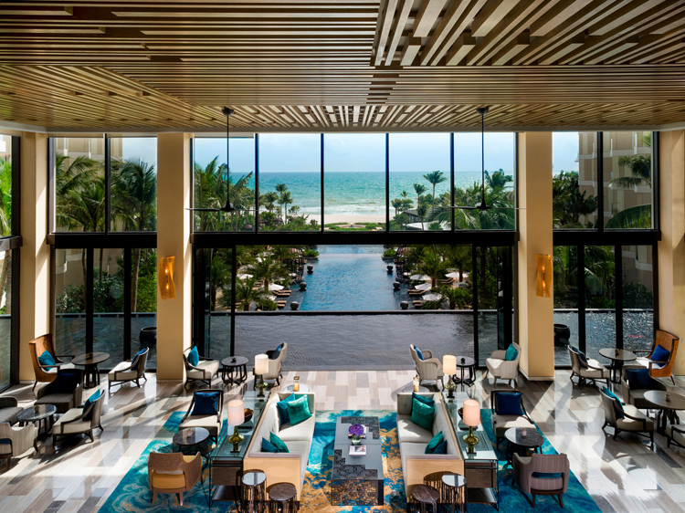
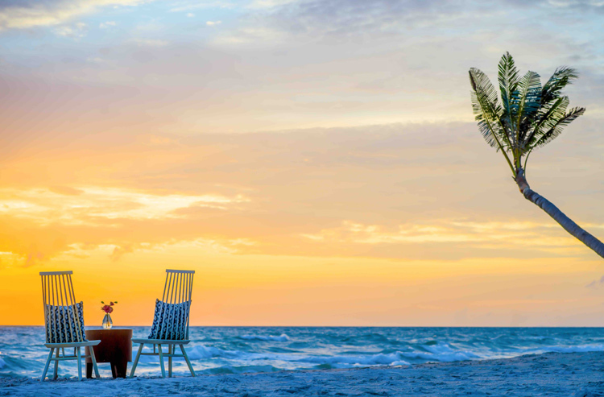
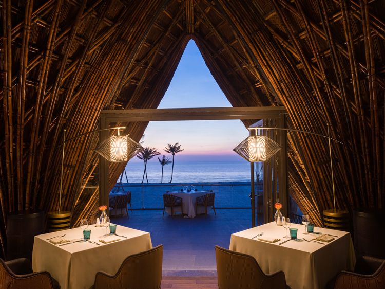
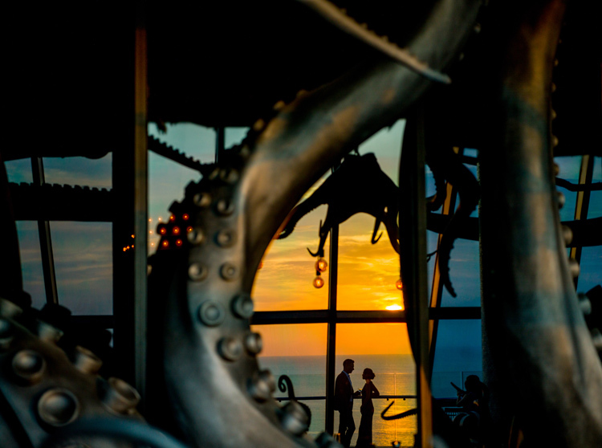

Bãi Trường - điểm ngắm hoàng hôn ở Phú Quốc
Kiên Giang-Du khách có thể ngắm trọn vẹn hoàng hôn Bãi Trường tại 4 điểm khác nhau ở InterContinental Phu Quoc Long Beach, Phú Quốc.
Sảnh tiếp tân Nhà hàng nướng SeaShack Nhà hàng LAVA bên bãi biển Quán bar INK 360
Phú Quốc ngoài vườn tiêu, rượu sim hay ngọc trai còn có cảnh hoàng hôn tím biếc cuốn hút nhiều du khách. Ghé thăm khu nghỉ dưỡng InterContinental Phu Quoc Long Beach ở Bãi Trường, du khách sẽ được tận mắt nhìn ngắm trọn vẹn cảnh hoàng hôn ngoạn mục ở 4 điểm khác nhau tại đây.

Ngắm hoàng hôn Bãi Trường là một trong những trải nghiệm khó quên cho mỗi du khách khi đặt chân đến đảo Ngọc.
Sảnh tiếp tân
Được mệnh danh là một trong những khu nghỉ dưỡng có sảnh tiếp tân ấn tượng nhất đảo Ngọc, InterContinental Phu Quoc Long Beach đón khách tại không gian mở, lộng gió biển, được bao quanh bởi hồ nước nhân tạo. Tất cả mang lại cảm giác thư giãn và thoải mái, đặc biệt là những ai vừa đi một đoạn đường dài. Một bức tranh thiên nhiên xanh mát như trải ra trước mắt với khoảng sân vườn đầy cây và hoa, ôm lấy 2 hồ bơi vô cực, xa xa là biển xanh hiền hòa nơi từng con sóng nhỏ dịu dàng mơn man bờ cát.
Sảnh tiếp tân tại InterContinental Phu Quoc Long Beach đón khách tại không gian mở, lộng gió biển, được bao quanh bởi hồ nước nhân tạo.
Hoàng hôn ở Phú Quốc thường bắt đầu vào khoảng 5h30 khi mặt trời đỏ như hòn lửa, lặn dần nơi đường chân trời; nước biển chuyển thành màu xanh thẫm và nền trời loang giữa sắc xanh dịu nhẹ với cam đỏ, hồng tím. Nơi đây còn gây ấn tượng khi thỉnh thoảng lại điểm xuyết vài tông màu trắng xám của những đám mây bảng lảng.
Nhà hàng nướng SeaShack
Nằm dài trên cát trắng, vươn mình đón gió biển, Sea Shack với thiết kế không gian mộc mạc, mang đến cho thực khách trải nghiệm ẩm thực tuy bình dị nhưng rất ngon miệng. Nhà hàng có thực đơn phong phú gồm hải sản nướng, những món tapas nhỏ xinh kết hợp với bia thủ công, rượu trái cây hay cocktail Tiki cũng đủ làm nên một buổi chiều thú vị.
Du khách sẽ có những trải nghiệm đáng nhớ khi ngắm hoàng hôn ngay tại Sea Shack.
Đi chân trần trên cát, ngồi bên chiếc thuyền gỗ, nhâm nhi một ly bia mát lạnh, nhìn ráng chiều màu cam đỏ buông dần trên biển xanh, hòa quyện cùng màu trời lam tím là trải nghiệm đáng nhớ cho bạn.
Nhà hàng LAVA bên bãi biển
Cách Sea Shack vài bước chân là nhà hàng LAVA. Cũng nằm hiền hòa bên bờ biển, nhưng LAVA lại nổi bật bởi những chi tiết cách điệu, mang lại sự mới lạ và sang trọng. Trong đó, mái vòm bằng tre nhấp nhô giữa khoảng màu xanh mênh mông của cây lá, quầy bar làm bằng san hô hóa thạch màu xanh biển ấn tượng, tôn lên sự phá cách tinh tế trong tổng thể nội thất mang tông màu trầm ấm áp của nhà hàng.
LAVA ghi điểm nhờ thiết kế mái vòm bằng tre nhấp nhô giữa khoảng màu xanh mênh mông của cây lá.
Du khách đến dùng bữa tối tại đây sẽ thích thú với những món hải sản tươi như vừa đánh bắt; hay thịt bò ngoại nhập thơm ngon, tròn vị; và càng không nỡ bỏ qua khoảnh khắc đợi đón hoàng hôn ở khoảng sân hiên ngoài trời thoáng đãng, đón gió biển trong lành. Đây là nơi thích hợp để quây quần bên những người thương yêu, cùng nhau nhấm nháp một chai vang ngon và chiêm ngưỡng sự biến đổi kỳ lạ của màu trời từ xanh lam đến hồng tía, pha một chút màu cam sáng ẩn hiện trong đám mây xam xám ở phía xa.
Quán bar INK 360
Quán bar nằm trên tầng 19 của khu nghỉ dưỡng nổi tiếng là một công trình nghệ thuật không chỉ bắt mắt vì sự độc đáo, mà còn khiến nhiều người ngạc nhiên trước hình ảnh và thần thái của quái vật biển Kraken - bạch tuộc khổng lồ - tượng trưng cho sức mạnh và những bí ẩn của đại dương.
Được "thai nghén" bởi kiến trúc sư người Australia - Ashley Sutton - INK 360 mang đến cho du khách một trải nghiệm hoàn toàn khác biệt về các quán bar tầng thượng.
Khi ráng chiều dần buông, những vệt nắng cuối ngày hắt lên cửa kính, chiếu vào từng chiếc vòi bạch tuộc đen xám, tạo nên khoảng tối ảo diệu, đổ bóng xuống nền gạch, kết hợp với vạch kinh độ trên sàn thành một hải đồ, thể hiện chính xác đến từng chi tiết chủ đề về đại dương. Không chỉ là địa điểm check in ấn tượng, INK 360 còn hấp dẫn du khách bởi thực đơn cocktail phong phú cùng với các loại rượu tên tuổi. Du khách có thể vừa khoan khoái thưởng thức những ly cocktail đặc trưng, vừa đắm chìm trong cảnh mặt trời lặn ngoạn mục, khoảnh khắc hiếm có khi những tia nắng đỏ tía cuối ngày đổ ánh vàng xuống mặt biển xanh.
Thư Kỳ